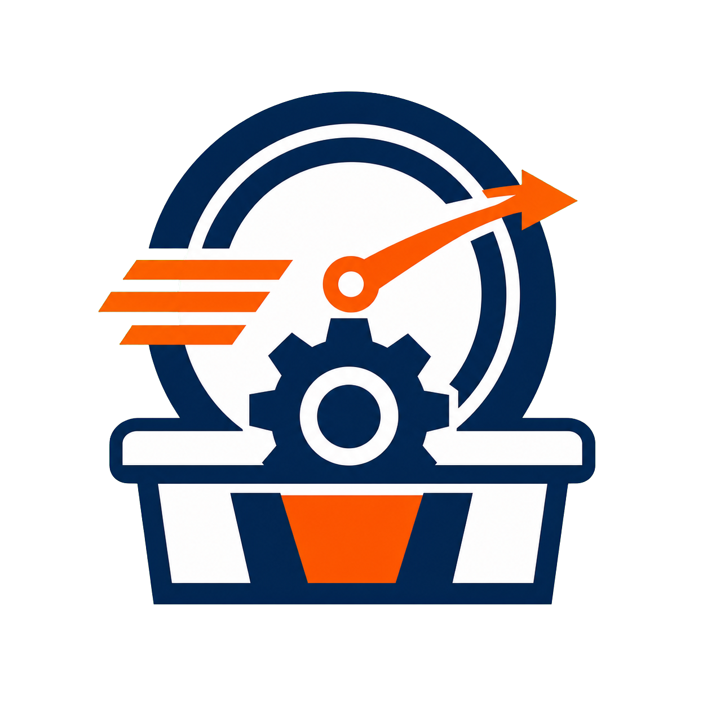
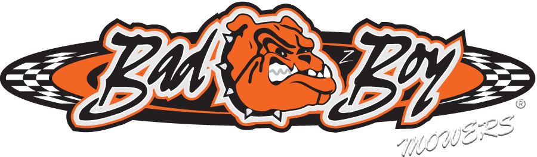
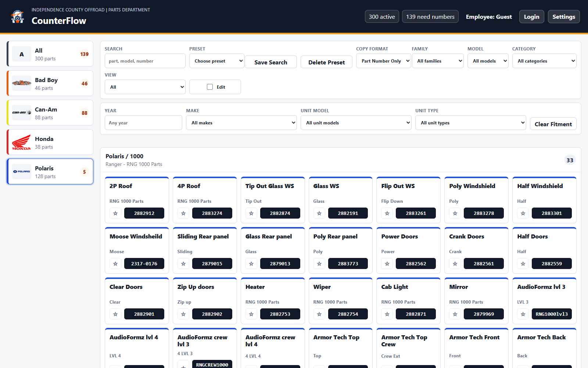

Fast search and fitment
Search across part numbers, models, vendors, tags, alternate numbers, and notes. Narrow results by year, make, unit model, and unit type.

CounterFlowPowersports counter software
Put the part numbers your team uses every day one click away.
A shared, searchable reference board for parts and service counters that works beside your CRM, DMS, cashier, and repair-order software.
FindSearch by brand, model, category, or fitment
CopySend the right format straight to the clipboard
MaintainUpdate shared numbers without changing code
Built for multi-line powersports dealerships

From lookup to CRM
CounterFlow does not replace official catalogs or dealership software. It shortens the repeated middle step between finding a known common part and entering it into the customer workflow.
Choose a brand or filter by year, make, unit model, family, and category. Saved searches put common filters, belts, batteries, and maintenance items close at hand.
Select the part card and CounterFlow copies the number in the employee's preferred format, from number-only to a repair-order or DMS-ready line.
Paste into the existing CRM, cashier, DMS, quote, or repair order. The dealership keeps its established process while removing repeat typing and scattered cheat sheets.
The working product
The board stays dense, clear, and ready for repeated use during a busy Saturday rush.

Real dealership scenarios
Customer at the counter
Search a known oil filter, belt, battery, windshield, or maintenance part. Confirm the fitment details, copy the number, and continue the transaction in the dealership's existing system.
Capability overview
Every feature supports one of three jobs: finding a known number faster, keeping shared reference data current, or protecting the dealership's work.
Search across part numbers, models, vendors, tags, alternate numbers, and notes. Narrow results by year, make, unit model, and unit type.
Copy a number by itself or use item, brand, repair-order, DMS-row, and CSV formats saved for each signed-in employee.
Star frequently used parts, revisit recently copied numbers, and keep each employee's shortcuts and display preferences separate.
Add or revise brands and parts without rebuilding the program. Track superseded, alternate, and aftermarket numbers with fitment notes.
Run from one host computer and open the same board from multiple counter workstations on the dealership network.
Use admin-only settings, role permissions, review reports, imports, exports, daily backups, restore tools, and database health checks.
Designed to work beside your stack
Built for the dealership that has to maintain it
Employee accessDedicated login, personal favorites, automatic sign-out, and role-based permissions.
Data protectionDaily backups, safety backups before risky changes, restore tools, and archived brands.
Flexible setupLocal PC, shared dealership network, or hosted deployment with persistent storage.
Bulk maintenanceNative Excel and CSV import/export for catalog-wide updates and offline review.
Keep the counter moving
One maintained board. Multiple employees. Fewer repeat lookups between the catalog and the customer screen.